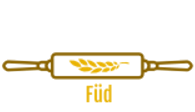

Dit was opdracht waar we voor het eerst wireframes moesten gebruiken. Voor deze opdracht moesten we wireframes uitwerken voor een webwinkel genaamd Füd. In deze webwinkel werden alleen maar gezonde producten verkocht. Ik heb dit aangepakt door eerst de website te tekenen op een white board. Daarna heb ik het programma pencil gebruikt om de wireframe verder uit te werken. Dit had ik eerst in een ander programma gedaan, maar het bleek al snel dat ik moest betalen als ik meer dan 3 pagina's wou maken. Hierdoor moest ik het opnieuw in Pencil maken.
